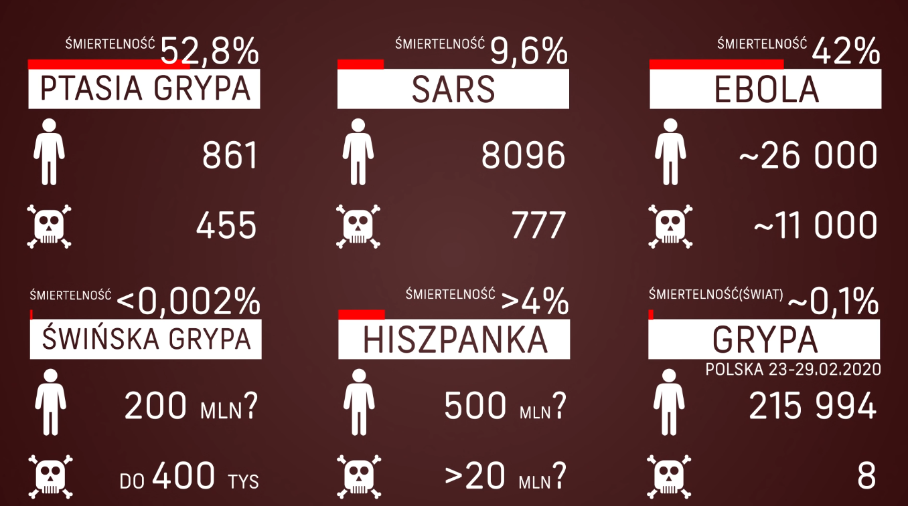

Koronawirus - czym jest?
Nowy koronawirus SARS-Cov-2 wywołuje chorobę o nazwie COVID-19. Choroba objawia się najczęściej gorączką, kaszlem, dusznościami, bólami mięśni, zmęczeniem.
Jak często występują objawy?
Ciężki przebieg choroby obserwuje się u ok.15-20 proc. osób. Do zgonów dochodzi u 2-3 proc. osób chorych. Prawdopodobnie dane te są zawyżone, gdyż u wielu osób z lekkim przebiegiem zakażenia nie dokonano potwierdzenia laboratoryjnego. Koronawirus, który został wykryty w Wuhan otrzymał nazwę SARS-CoV-2. Natomiast choroba, którą wywołuje, została nazwana COVID-19. To właśnie ona mrozi krew w żyłach wszystkim ludziom na świecie.
Jakie jest prawdopodobieństwo, że dany objaw jest oznaką zarażenia koronawirusem, a nie grypą?
- Ból głowy - częściej pojawia się w przypadku grypy niż COVID-19
- Suchy kaszel - charakterystyczny dla obu chorób
- Bóle mięśni - częściej pojawia się w przypadku grypy niż COVID-19
- Katar i zatkany nos - rzadziej pojawia się w przypadku koronawirusa, czasami w przypadku grypy
- Kichanie - rzadko w obu przypadkach
- Biegunka - rzadko w obu przypadkach
- Ból gardła - podobny stopień prawdopodobieństwa w przypadku obu chorób
- Zmęczenie - częściej pojawia się w przypadku grypy niż COVID-19
Jak zidentyfikować koronawirusa?
W przypadku, gdy zauważamy któryś z symptomów, warto na początek zadać sobie pytanie, czy mieliśmy szansę się zarazić koronawirusem -czy wróciliśmy w ciągu ostatnich miesięcy zza granicy? Czy mieliśmy kontakt z kimś, kto podróżował? Czy przebywaliśmy w obszarze, gdzie zidentyfikowano obecność wirusa? Personel medyczny szczególną uwagę zwraca na osoby, które mają duszący kaszel i gorączkę. To pierwsze znaki, które mogą nakierować lekarzy na odpowiednią diagnozę.